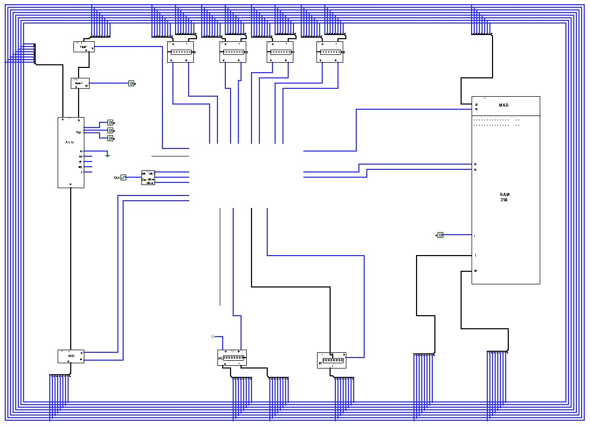

Assignment 10 — One Bus, Four Registers
100 points | Week 10 | Logisim Checkpoint 4 + Canvas quiz | Due Sunday 10/25, 11:59 pm
What you submit
| Part | What it is | How | Points |
|---|---|---|---|
| A | Logisim Checkpoint 4 — the CPU core on its bus | .circ file + 10 screenshots | 60 |
| B | Canvas quiz on the four Week 10 pages | in Canvas: 16 questions, auto-graded | 40 |
The CPU Project Plan is a separate Canvas assignment, due the same day and graded complete/incomplete. It is not part of these 100 points.
Part A — Logisim Checkpoint 4 (60 points)
Four new component tabs and one new circuit tab, CPU, where everything meets on the bus. Pages 1–3 of this week explain every connection; read them first.
REGISTER_8BIT and MEM_8BIT from Week 5; MEM_1BIT from Week 4; DECODER_2TO4 from Week 3; ALU_8BIT from Week 7. Instantiate them. Do not rebuild or modify any of them. R0–R3 and ACC are five instances of your REGISTER_8BIT, not new tabs.
Tab TMP — these pin names are exact
| Pin | Width | Direction | Meaning |
|---|---|---|---|
i | 8 | in | from the bus |
s | 1 | in | set |
o | 8 | out | to BUS1 — always driven |
Inside: one MEM_8BIT instance; an 8-bit controlled buffer between i and the MEM_8BIT’s i, controlled by s; s also to the MEM_8BIT’s s; its o to o. No enable. (Page 2, §10.6, explains the buffer.)
Tab BUS1 — these pin names are exact
| Pin | Width | Direction | Meaning |
|---|---|---|---|
i | 8 | in | from TMP |
bus1 | 1 | in | 1 forces the output to 00000001 |
o | 8 | out | to the ALU’s B |
Inside: bit 0 of o = i0 OR bus1; bits 1–7 = ik AND NOT bus1. Seven ANDs, one OR, one NOT.
Tab FLAGS — these pin names are exact
| Pin | Width | Direction | Meaning |
|---|---|---|---|
c_in | 1 | in | from the ALU’s CO |
a_in | 1 | in | from AL |
e_in | 1 | in | from EQ |
z_in | 1 | in | from Z |
s | 1 | in | set — captures all four at once |
C A E Z | 1 each | out | the held flags |
Inside: four MEM_1BIT instances, each input to its cell’s In, the one s to all four Sets.
Tab REG_SELECT — these pin names are exact
| Pin | Width | Direction | Meaning |
|---|---|---|---|
ra | 2 | in | register A number |
rb | 2 | in | register B number |
rega_e | 1 | in | register A drives the bus |
regb_e | 1 | in | register B drives the bus |
regb_s | 1 | in | register B captures |
r0_e … r3_e | 1 each | out | to R0–R3’s e |
r0_s … r3_s | 1 each | out | to R0–R3’s s |
Inside: three DECODER_2TO4 instances (page 3, §10.10). ra to the first, ANDed with rega_e; rb to the second, ANDed with regb_e; each rk_e is the OR of those two lines. rb to the third, ANDed with regb_s, gives r0_s–r3_s. Using one decoder on rb to feed both sets of AND gates is equivalent and also accepted.
Tab CPU — the bus and the core
- The bus: eight 1-bit wire loops, innermost = bit 0, outermost = bit 7 (page 1, §10.4). Leave a large empty space in the middle; the control unit goes there in Week 11.
- On the bus, through splitter fans: R0, R1, R2 and R3 (both
iando); ACC’so; TMP’si; the ALU’sA; and a test port — an 8-bit input pindatathrough an 8-bit controlled buffer controlled by an input pindata_e. The test port is scaffolding for loading values by hand; nothing later depends on it. - Off the bus: TMP
o→ BUS1i; BUS1o→ ALUB; ALUC→ ACCi; ALUCO,AL,EQ,Z→ FLAGSc_in,a_in,e_in,z_in. - REG_SELECT’s eight outputs to R0–R3’s
eands. - Control input pins, all pull-down:
ra,rb(2 bits) to REG_SELECT;rega_e,regb_e,regb_sto REG_SELECT;tmp_sto TMP;acc_e,acc_sto ACC;flags_sto FLAGS;bus1to BUS1;opcode(3 bits) andcito the ALU;dataanddata_efor the test port. - Probes on the
regoutput of R0–R3 and ACC, on TMP’so, the ALU’sC, the four FLAGS outputs, and the bus (combine the eight loops through one more splitter into an 8-bit probe).

Points
| Criterion | Points |
|---|---|
TMP: three pins exactly, a MEM_8BIT instance, the input buffer controlled by s | 6 |
BUS1: three pins exactly, output 00000001 when bus1 = 1 and i when 0 | 6 |
FLAGS: nine pins exactly, four MEM_1BIT instances, one shared s | 6 |
REG_SELECT: thirteen pins exactly, DECODER_2TO4 instances, the AND and OR gating correct | 12 |
CPU tab: eight-loop bus with bit 0 inside; every part on or off the bus as listed; control and probe pins present | 18 |
| Ten verification screenshots, matching the table below | 10 |
| Single file; only Wiring and Gates components | 2 |
Verify, and screenshot each step
Every control pin starts at 0. “Pulse” means 0 → 1 → 0. Raise an enable before you pulse a set, and drop it after (page 1, §10.3). Each step continues from the one before.
| # | Do | Expect |
|---|---|---|
| 1 | Nothing yet — a fresh circuit | every register shows EEEEEEEE (correct, as in Week 5) |
| 2 | data = 00000101, data_e = 1; rb = 00, pulse regb_s; data_e = 0 | R0 = 00000101 |
| 3 | data = 00000111, data_e = 1; rb = 01, pulse regb_s; data_e = 0 | R1 = 00000111 |
| 4 | ADD R0, R1, transfer 1: rb = 01, regb_e = 1, pulse tmp_s, regb_e = 0 | TMP = 00000111 |
| 5 | Transfer 2: opcode = 000, ra = 00, rega_e = 1, pulse acc_s and flags_s together, rega_e = 0 | ACC = 00001100; C A E Z = 0 0 0 0 |
| 6 | Transfer 3: acc_e = 1, rb = 01, pulse regb_s, acc_e = 0 | R1 = 00001100; R0 unchanged |
| 7 | R0 + 1 → R0, with opcode still 000: ra = 00, rega_e = 1, bus1 = 1, pulse acc_s, then rega_e = 0 and bus1 = 0; acc_e = 1, rb = 00, pulse regb_s, acc_e = 0 | R0 = 00000110 |
| 8 | XOR R1, R1: the three transfers of steps 4–6 with ra = rb = 01 and opcode = 110, flags_s pulsed with acc_s | R1 = 00000000; C A E Z = 0 0 1 1 |
| 9 | Load data = 10000001 into R2 as in step 2 (rb = 10); then SHL R2, R2: three transfers with ra = rb = 10, opcode = 010, ci = 0, flags_s with acc_s | R2 = 00000010; C A E Z = 1 0 1 0 |
| 10 | ra = 00, rega_e = 1 and data = 11111111, data_e = 1 — two drivers | the bus shows E on the bits where R0 and data differ. Then drop both. |
Step 9’s flags: the bit shifted out of R2 sets C; A and E compare the ALU’s two inputs, which were both R2. Step 10 is the one thing on this page you must never do in a working CPU; it is here so you have seen what it looks like.
Submission checklist
- All circuits are contained within this single
.circfile — no external file links TMP,BUS1,FLAGS,REG_SELECTandCPUpresent, pins named exactly as aboveREGISTER_8BIT,MEM_8BIT,MEM_1BIT,DECODER_2TO4andALU_8BITinstantiated from the tabs you already had — none rebuilt, none modified- Every splitter fan connects bit 0 to the innermost bus loop
- Only TMP’s
i, the ALU’sA, ACC’so, R0–R3, the test port and the bus probe touch the bus - Ten screenshots, one per verification step
- Only Wiring and Gates components used — nothing from Plexers, Arithmetic or Memory
Part B — Canvas quiz (40 points)
Sixteen questions on the four Week 10 pages, 2.5 points each, every one auto-graded. Open in Canvas from Monday 10/19 until Sunday 10/25 at 11:59 pm.
- No time limit. Two attempts; your higher score counts. Each question is drawn from two parallel versions, so a second attempt usually looks different.
- Open notes and course pages. The four widgets — especially the Core and the Instruction Decoder — are the best preparation.
- You see your responses after your last attempt; correct answers are released on Monday 10/26.
Points and outcomes
| Part | Points | Assesses |
|---|---|---|
| A — Checkpoint 4 | 60 | SLO1 |
| B — Canvas quiz | 40 | SLO1, SLO2 |
| Total | 100 |